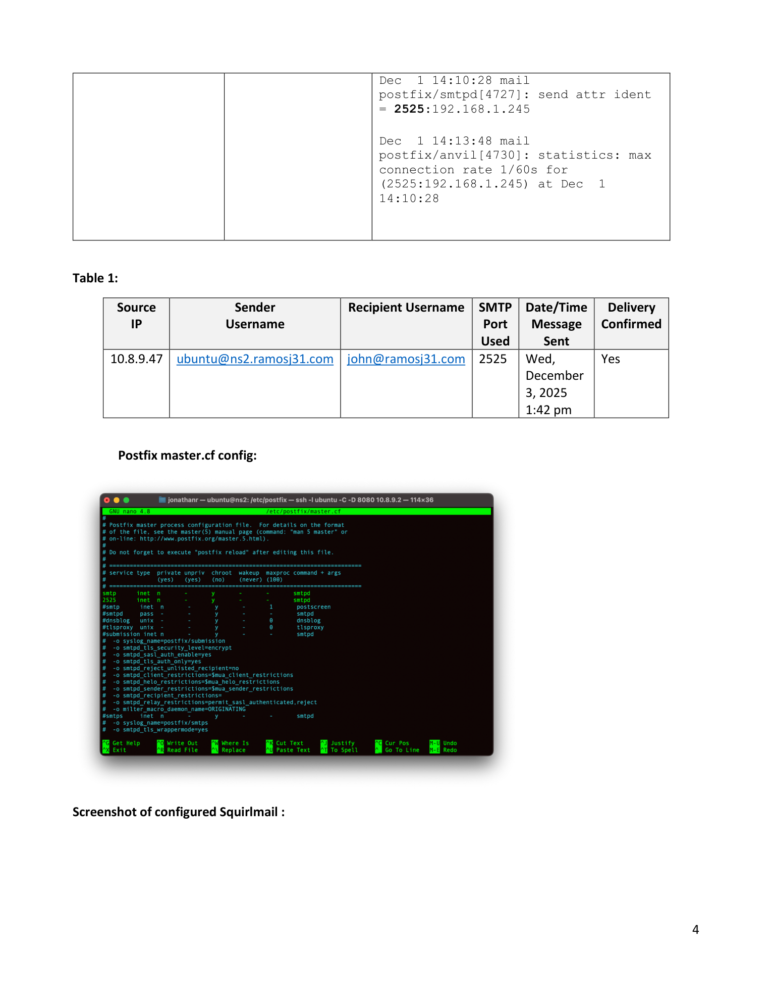
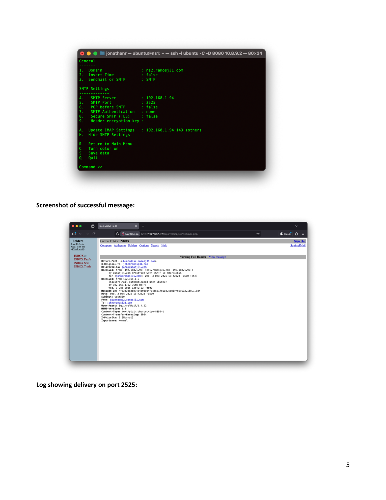
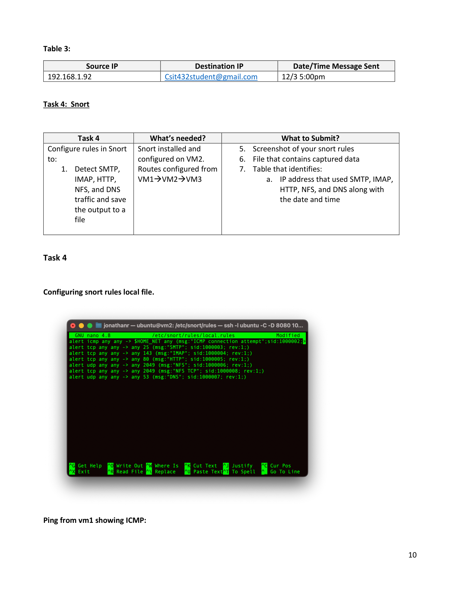
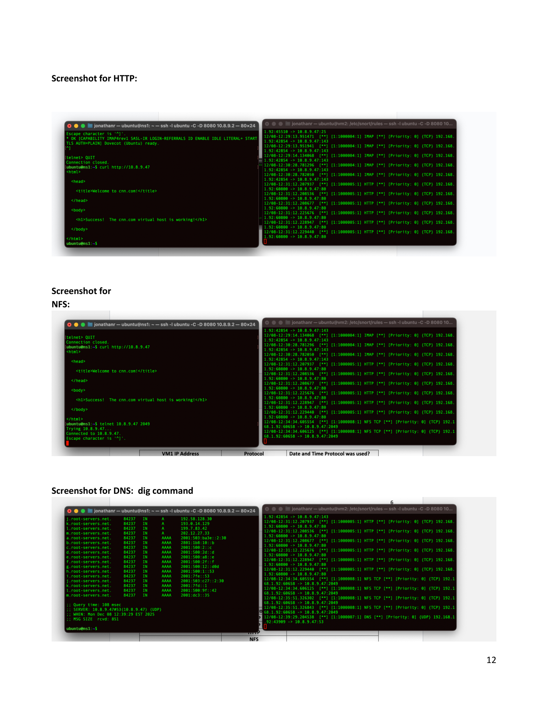

SYSTEMS ADMINISTRATION
Virtual Computing Infrastructure.
A multi-virtual-machine Linux infrastructure project involving server configuration, email services, NFS, Apache, network routing, VPN connectivity, and Snort network traffic monitoring.
Project Overview
This project involved building and configuring a virtual computing environment using multiple Linux virtual machines. The environment was used to configure network services, server applications, email services, and network monitoring.
Virtual Infrastructure
The project used multiple virtual machines that communicated with each other through configured network routes. The environment included VM1, VM2, and VM3 for testing and service configuration.
Technologies
Linux System Administration
Linux virtual machines were configured and administered through the command line. The project required configuring services, editing system configuration files, testing connectivity, and troubleshooting the virtual environment.
Email Services
Email services were configured using Postfix and related mail services. The project included sending internal email from the terminal as well as sending external email through SquirrelMail.
NFS
Network File System services were configured as part of the virtual environment. NFS traffic was also tested and monitored during the network security portion of the project.
Apache Web Server
Apache was used as part of the Linux server environment. The project required configuring services within the virtual infrastructure and verifying communication between systems.
Snort Network Monitoring
Snort was configured to detect network traffic including SMTP, IMAP, HTTP, NFS, and DNS. Custom rules were configured and traffic was generated between the virtual machines for testing.
Networking & Routing
Network routes were configured between the virtual machines to allow communication across the environment. Connectivity was tested using tools such as ping and Telnet.
VPN Connectivity
VPN connectivity was used as part of the virtual computing environment to establish access to the required network resources.
Security & Traffic Analysis
Network traffic was generated and analyzed to verify that Snort rules could identify different protocols and services. The project provided hands-on experience with network monitoring and security-oriented system administration.
What I Learned
This project strengthened my experience with Linux system administration, server configuration, networking, troubleshooting, virtual machines, network services, and security monitoring.
PROJECT VISUALS
Systems Administration Lab
Screenshots from the virtual computing and network administration environment.

Postfix Configuration
Configuration and testing of the Postfix mail service within the Linux virtual environment.

Email Services
SquirrelMail configuration and successful email delivery between systems.

Snort Rules
Custom Snort rules configured to detect network traffic and monitor multiple protocols.

Network Traffic Monitoring
HTTP, NFS, and DNS traffic captured and analyzed during the Snort testing process.
Interested in my work?
Check out my other projects or get in touch with me.